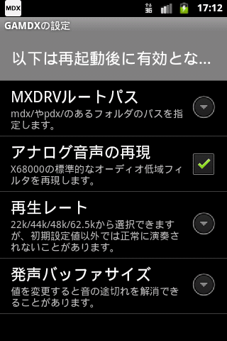

[環境設定]画面
メインメニューから[環境設定]を選ぶと、GAMDXの環境設定を行うことができます。
- MDXルートパス
-
MDX/PDXファイルのルートフォルダを指定します。
- PDXファイルの検索は、MDXルートパスにある"pdx/"サブフォルダが対象となります。
- アナログ音声の再現
-
X68000の標準的なオーディオ低域フィルタを再現します。高域がややこもった音になります。
チェックをOFFにすると、フィルタを適用しないきらびやかな音になります。
- 再生レート
-
再生レートを変更します。
「22050Hz/44100Hz/48000Hz/62500Hz」から選ぶことができますが、初期値から変更するとノイズが混ざったり、発声が行われないことがあります。
- 発声バッファサイズ
-
発声バッファサイズを変更します。初期値は"4"です。
音の途切れが発生する場合、値を変更することで途切れを解消できることがあります。